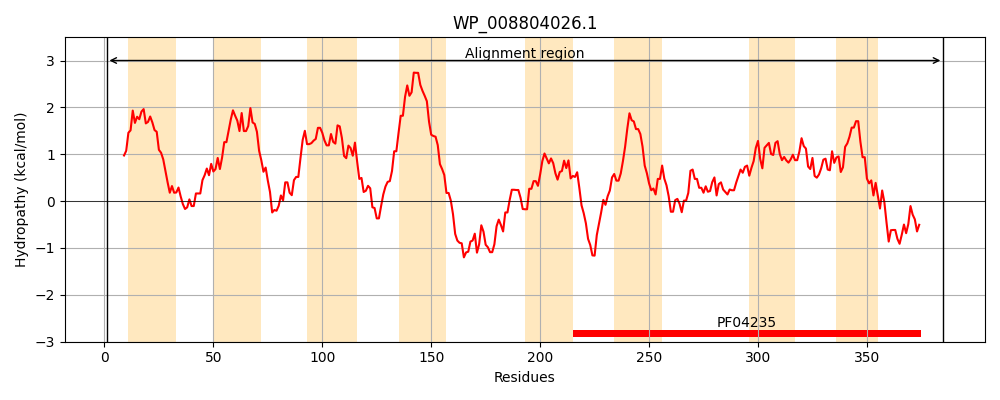
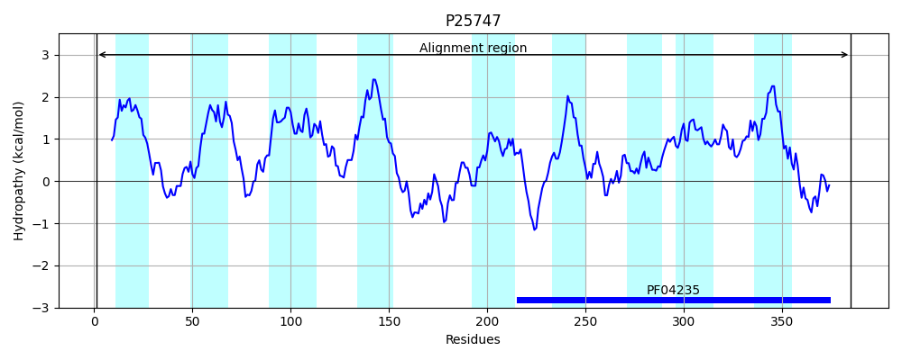
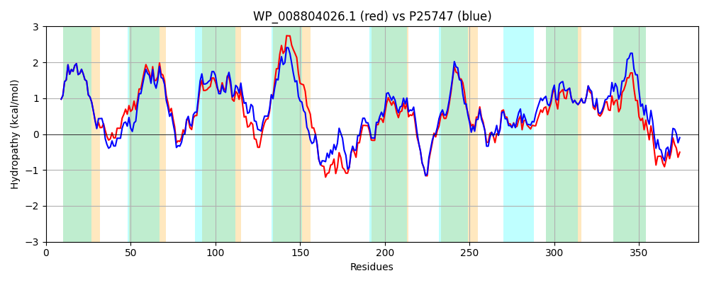

Hit Accession: P25747
Hit TCID: 9.B.169.1.2
Hit Description: gnl|BL_ORD_ID|9566 gnl|TC-DB|P25747|9.B.169.1.2 Uncharacterized protein YeiB OS=Escherichia coli (strain K12) GN=yeiB PE=4 SV=2
Mach Len: 385
e:0.000000
Query TMS Count : 8
Hit TMS Count: 9
TMS-Overlap Score: 7.750000
Predicted Substrates:None
BLAST Alignment:
Score: 1633 , Bit scores: 633 bits, E-value: 0.0e+00, Alignment length: 385, Percentage identity: 79
Query: 1 MERNVTLDFVRGVAILGILLLNISAFGLPKAAYLNPAWSGSATLSDAWTWALLDLLAQVKFLTLFALLFGAGLQLLLPRGKRWIQSRLTLLALLGFIHGLFFWDGDILLAYALVGLVSWRMVREAHHVKSLFNTGVVLYLIGIAVLVLLGVISGTAANRSWVPDAANLQYEQYWKLHGGMEAVSNRADMLSDNLLALGAQYGWQLAGMMLMGAALMRSGWLKGQFSLRHYRRTGALLVVAGMAVNLPAIFAQWYLAWDYRWCAFLLQAPRELSAPLQAIGYASLAWGYWPQLCRFRLVGAIACVGRMALTNYLLQTLICTTLFYHLGLFMRFDRLQLLAFVPPIWAVNLLVSSLWLRRFRQGPVEWLWRQLTLRASGTSLKDTSR 385
MERNVTLDFVRGVAILGILLLNISAFGLPKAAYLNPAW G+ T DAWTWA LDL+ QVKFLTLFALLFGAGLQ+LLPRG+RWIQSRLTLL LLGFIHGL FWDGDILLAY LVGL+ WR+VR+A VKSLFNTGV+LYL+G+ VL+LLG+IS + +R+W PDA+ + YE+YWKLHGG+EA+SNRAD + ++LLALGAQYGWQLAGMML+GAALMRSGWLKGQFSLRHYRRTG +LV G+ +NLPAI QW L W YRWCAFLLQ PRELSAP QAIGYASL +G+WPQL RF+LV AIACVGRMALTNYLLQTLICTTLFYHLGLFM FDRL+LLAFV P+W N+L S +WLR FRQGPVEWLWRQLTLRA+G ++ TSR
Sbjct: 1 MERNVTLDFVRGVAILGILLLNISAFGLPKAAYLNPAWYGAITPRDAWTWAFLDLIGQVKFLTLFALLFGAGLQMLLPRGRRWIQSRLTLLVLLGFIHGLLFWDGDILLAYGLVGLICWRLVRDAPSVKSLFNTGVMLYLVGLGVLLLLGLISDSQTSRAWTPDASAILYEKYWKLHGGVEAISNRADGVGNSLLALGAQYGWQLAGMMLIGAALMRSGWLKGQFSLRHYRRTGFVLVAIGVTINLPAIALQWQLDWAYRWCAFLLQMPRELSAPFQAIGYASLFYGFWPQLSRFKLVLAIACVGRMALTNYLLQTLICTTLFYHLGLFMHFDRLELLAFVIPVWLANILFSVIWLRYFRQGPVEWLWRQLTLRAAGPAISKTSR 385 | Protein Hydropathy Plots: |
|---|
|  |  |
Pairwise Alignment-Hydropathy Plot:
|
|---|
|  |